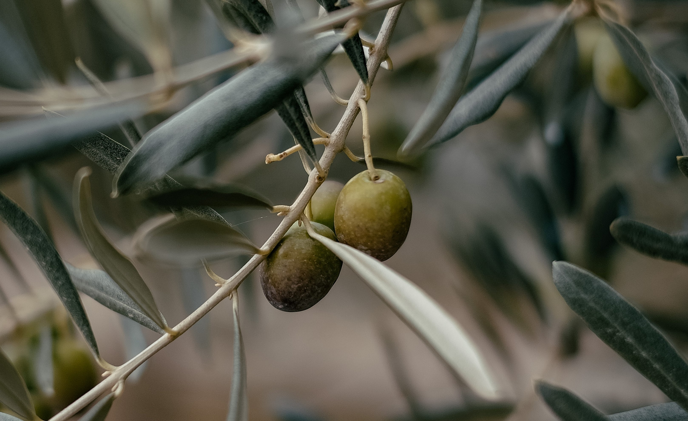

Introduction
From the trees to the fruit and the oil, olives were everywhere in Ancient Greece. They carried rich symbolism and were used in some for the biggest cultural traditions. The Greek salad, while not an Ancient Greek dish as tomatoes and cucumber were not brought to Europe until the sixteenth century, is a fantastic way of showcasing the humble (or not so humble) olive.
The olive tree, olea europaea, was a symbol throughout the Ancient Greek world and used in religion as well as to represent peace, wisdom and victory. This victory symbolism explains why winners of the Olympic Games were traditionally crowned with a wreath of olive branches.

An olive tree branch with ripe olives.
One myth describes how the very first olive tree in Greece was planted by the Goddess of wisdom and peace, Athena. As her magic spear fell upon the earth it turned into an olive tree and where it grew later became the city of Athens. Greek mythology claims that all olive trees in the nation originate from that first tree. In honour of Athena and the founding of Athens, ancient gold coins were decorated with an image of the Goddess wearing an olive wreath and holding a jug of olive oil.
Olive oil itself was also deeply ingrained in Ancient Greek culture. Although the poor could not afford oil, it was used to anoint dead bodies, treat health conditions, and to oil athletes.
Hippocrates mentions sixty medicinal uses for olive oil, and it is still regularly used today to treat ear problems.
Olive oil was valued so highly that it was regularly used as a reward for winners of the Panathenaic Games. Over 70,000 kilos of olive oil was needed to reward all the winners, with the chariot race winner receiving approximately 5000 kilos!
Recipe
- 100 g cherry tomatoes
- 100g cucumber
- 1/4 Pc red onion
- 50 g pitted olives
- 1 tsp dried oregano
- Handful of feta
- 1 tsp black pepper
- 1 dash Extra virgin olive oil
Instructions
- Cut the tomatoes in half and thinly slice the cucumber and red onion
- Cut feta cheese into small cubes
- Place tomatoes, cucumber, onion, feta cheese, and olives into a salad bowl
- Add oregano, black pepper and olive oil
- Mix gently before serving
Further discovery
A video about the role olives had in the fall of Ancient Greece